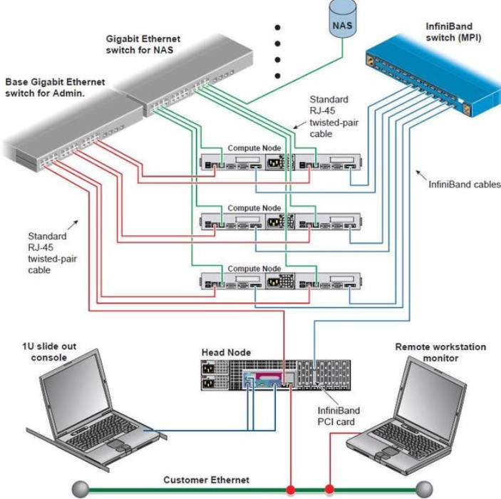
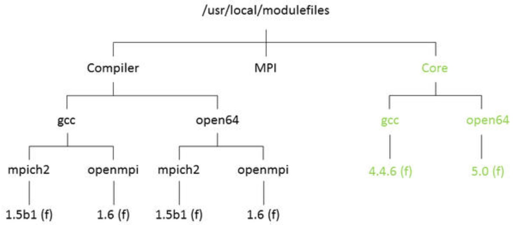

Unidad 6: Infraestructura de cluster#
Contenido de la unidad#

HPC y cluster#
Arquitectura general#
Distribución del espacio físico#
UPS#
Aire acondicionado de precisión#
Racks de servidores#
Switches#
Conectividad: infiniband#

InfiniBand
Nodos de computo#
Nodos de almacenamiento: nas#

Nodos de almacenamiento: nas#

Esquema básico disposición cluster#

Esquema básico#
Esquema básico: Conexión cluster#
Conexión cluster: VPN#
Esquema básico#
Arquitectura cluster BIOS#
Note
Análisis de los TFlops BIOS
Ver el Excel “Cálculo de Tflops BIOS.xlsx”
Arquitectura cluster BIOS#
Arquitectura cluster BIOS-INSPUR#
Note
Análisis de los TFlops BIOS-INSPUR
Ver el Excel “Análisis de capacidades TFlops INSPUR BIOS.xlsx”
Arquitectura cluster BIOS-INSPUR#

Sistemas operativos#

Análisis Financiero de BIOS#

Software de cluster#
Sistema Operativo:
Linux Centos.
Administrador de colas (Job Manager):
ClusterEngine HPC Professional edition.
Plataforma de virtualización:
ClusterEngine Unified Cloud Service Platform-HPC Basic Edition.
Librerías para ejecución de entornos en paralelo:
MPICH: 1Gb parallel message passing library.
MVAPICH2: 10Gb/IB parallel message passing library.
OpenMPI: high-performance message passing library.
Entornos de programación:
Intel Math Kernel Library
GCC compiler
Intel compiler & debugging software.
Intel C++/Fortran compiler.
Software para gestión de almacenamiento y acceso a datos:
Intel Enterprise Edition Lustre
Hadoop
Organización de directorios#
Librerías y módulos#
Librerías y módulos#
Paralelización en cluster: Ley de amdahl#
Paralelización en cluster: Taxonomía Flynn#
SISD
La CPU procesa únicamente una instrucción por cada ciclo de reloj.
Únicamente un dato es procesado en cada ciclo de reloj.
Es el modelo más antiguo de computadora y el más extendido.
MISD
Cada unidad ejecuta una instrucción distinta.
Cada unidad procesa el mismo dato.
Aplicación muy limitada en la vida real.
SIMD
Todas las unidades ejecutan la misma instrucción.
Cada unidad procesa un dato distinto.
Todas las unidades operan simultáneamente.
MIMD
Cada unidad ejecuta una instrucción distinta.
Cada unidad procesa un dato distinto.
Todas las unidades operan simultáneamente.